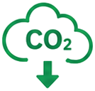

🚴 自転車通勤コスト計算ツール
自転車通勤と電車・車通勤の年間コストを比較して節約額を計算します
📊 年間コスト比較
こんなお悩み、ありませんか？
毎月の交通費・
ガソリン代が高い
車の維持費や
駐車場代が負担
通勤時間や運動不足が
気になっている
環境にやさしい
通勤に切り替えたい
このツールの特徴
コスト・健康・環境の3軸を、1回の診断でまとめて見える化
年間コストを自動計算
距離・通勤日数・交通手段を入れるだけで、自転車・車・電車の年間コストを自動で比較。駐車場代やメンテ費も加味します。
健康・時間効果も診断
消費カロリーや通勤時間を時給換算した時間コストまで算出。お金だけでなく健康面のメリットも数値で確認できます。

CO₂削減量を可視化
自転車通勤に切り替えた場合のCO₂削減量を表示。環境負荷の少ない移動への一歩を後押しします。
使い方はカンタン3ステップ
通勤条件を入力
片道距離・通勤日数・現在の交通手段（電車／車）を入力します。
コストを比較する
ボタンを押すだけで、自転車と現在の通勤手段の年間コストを自動比較。
結果を確認・保存
節約額・カロリー・CO₂を確認。印刷やコピーでシェアもできます。
結果をかんたんシェア＆保存
診断結果はSNSでシェアしたり、印刷・コピーして家計の記録に活用できます。何度でも条件を変えて再計算でき、比較履歴も残せます。
こんな方におすすめ
通勤費を見直したい方
交通費・ガソリン代を抑えて家計を改善したい方に。
運動不足が気になる方
通勤を運動に変えて、無理なく健康習慣をつくりたい方に。
車通勤からの転換
維持費・駐車場代の負担を減らしたい車通勤の方に。
環境を意識する方
CO₂を減らすエコな移動に切り替えたい方に。
📖 使い方
- ページを開き、入力フォームの項目を確認する
- 必要な情報を入力または選択する
- 実行ボタンをクリックして結果を取得する
- 表示された結果・アドバイスを確認する
- 必要に応じてコピー・SNSシェアで活用する
❓ よくある質問
Q. このツールは無料で使えますか？
はい、完全無料・登録不要でご利用いただけます。入力した内容はすべてブラウザ内で計算され、外部に送信されることはありません。
Q. スマートフォンでも使えますか？
はい、スマホ・タブレット・PCに対応しています。通勤前のスキマ時間に、いつでも手軽に診断できます。
Q. 健康効果やCO₂削減量はどう計算していますか？
走行距離・速度から消費カロリーを試算し、あわせて通勤時間や年間のCO₂削減量も算出します。いずれも一般的な目安値に基づく参考値です。
Q. 自転車の初期投資はどれくらいで元が取れますか？
自転車本体の購入費と年間の節約額から、回収期間の目安を確認できます。通勤距離が長いほど、車・電車との差額で早く回収できる傾向があります。
⚠️ 本ツールの結果は参考情報です。専門的判断は資格を持つ専門家にご相談ください。
📋 このツールの詳細
「自転車通勤コスト計算ツール」は、数値を入力するだけで結果をすぐに確認できる無料の計算ツールです。
サイクリングのコストと健康効果：自転車通勤の経済的メリット
自転車通勤の経済効果：交通費・駐車場代の削減
自転車通勤の最大のメリットは交通費の大幅削減です。東京都内での試算例：電車通勤（月1万円）→自転車通勤に切り替えると年間12万円の節約。交通費支給がある場合、会社によっては一部または全額支給を継続できる場合もあります（就業規則確認が必要）。加えて、月極駐車場代（東京都内平均3〜4万円/月）が不要になるため、車+電車通勤から自転車通勤への切り替えは年間40〜60万円の支出削減になるケースもあります。自転車の年間維持費（タイヤ交換・チェーンオイル・点検代）は通勤用シティサイクルで年間3,000〜15,000円程度と非常に低コストです。
健康・カロリー消費への効果
自転車通勤の健康効果は複数の研究で確認されています。英グラスゴー大学の研究（約26万人対象）では、自転車通勤者は非自転車通勤者に比べて心臓病リスクが46%・がんリスクが45%低下するという結果が出ています。カロリー消費の目安：体重65kgの人が時速15kmで30分サイクリングすると約200〜250kcal消費。毎日の通勤で往復1時間の自転車通勤を続けると年間で約14〜18万kcalの消費となり、体重換算で約18〜25kgの消費に相当します。また、有酸素運動による精神的効果（ストレス軽減・睡眠改善・認知機能向上）も確認されています。
交通安全ルールとサイクリングの注意事項
2023年4月から自転車のヘルメット着用が努力義務化されました（道路交通法改正）。16歳未満の子どもを乗せる場合や通勤・業務使用では着用が強く推奨されます。自転車事故の統計では、事故死者の約60%が頭部外傷が主因であり、ヘルメット着用により死亡リスクを約40〜75%低下させる効果があります。また、2024年11月から自転車の酒気帯び運転に対する罰則が強化されました（3年以下の懲役または50万円以下の罰金）。サイクリングコストをさらに抑えるには、前後ライト（夜間必須）・反射材・鍵（二重ロック）などの安全装備に最低5,000〜10,000円の初期投資が重要です。
自動車・交通費の実態データ（国土交通省）
国土交通省・自動車工業会のデータをもとに、車の維持費と交通費の現状を整理しました。
| 項目 | データ | 出典 |
|---|---|---|
| 自動車の年間維持費（普通車） | 約40〜60万円（車検・保険・税・ガソリン・駐車場含む） | 各種試算・業界データ（参考値） |
| ガソリン価格の推移 | 2024年：レギュラー約175〜185円/L（補助金あり） | 資源エネルギー庁「石油製品価格調査」 |
| 自転車通勤者の割合 | 通勤者全体の約15〜20%（都市部） | 国土交通省「全国都市交通特性調査」参考 |
| 電動アシスト自転車の市場規模 | 年間約90万台（2022年） | 自転車産業振興協会データ参考 |
📖 あわせて読みたいコラム記事
⚠️ 計算結果の活用にあたって
計算結果は参考値です。実際の税額・給付額・ローン返済額は個人の状況により異なります。重要な財務判断の際は最新の公式情報をご確認のうえ、ファイナンシャルプランナー・税理士等の専門家にご相談ください。
よくある質問
- Q. 自転車通勤のコストと健康メリットを教えてください
- 自転車通勤は交通費（電車・バス代）と健康コストの両面でメリットがあります。電車通勤と比較して月5,000〜30,000円の交通費節約が可能なケースもあります。健康面では毎日の有酸素運動になり、消費カロリーは時速15kmで1時間あたり約300〜400kcal（体重・強度による）です。ただし雨天時・炎天下の対策（レインウェア・日焼け対策）、体のクリーンアップ（職場での着替え）、タイヤパンク時の対応なども考慮が必要です。ヘルメット着用が努力義務化（2023年4月〜）されています。
- Q. 自転車の年間維持費はどれくらいかかりますか？
- 自転車の年間維持費の主な内訳として「タイヤチューブ交換：パンク修理1,000〜3,000円・タイヤ交換2,000〜6,000円/本（走行距離・タイヤグレードによる）」「チェーン交換：3,000〜5,000円（1〜2年ごと）」「定期点検・整備：3,000〜5,000円/回」「ブレーキパッド交換：1,000〜2,000円」「ライト電池・ベル等小物：1,000〜2,000円/年」があります。ロードバイク・クロスバイクは専門店でのメンテナンスが重要で、ルブ（チェーン油）の定期補給や変速機の調整も費用として見込んでおきましょう。
- Q. 電動アシスト自転車のコストパフォーマンスは？
- 電動アシスト自転車の車体価格は8〜20万円以上と通常の自転車より大幅に高いですが、「上り坂・向かい風が多いルート」「荷物が多い（買い物・子ども乗せ）」「通勤距離が片道10km以上」の場合はコストに見合う効果が期待できます。バッテリーの寿命は一般的に3〜5年（充電サイクル500〜700回程度）で交換費用は3〜5万円程度かかります。電気代は1回充電あたり約3〜7円と安価です。補助金制度を設けている自治体もありますので確認してみてください。
自転車コストの計算と通勤・趣味利用の経済的メリット
自転車は初期費用と維持費が比較的低く、健康・環境・経済のすべてにメリットがある移動手段です。自転車通勤・サイクリングを始めるための基本知識とコスト管理の方法を理解しましょう。
- 自転車の種類と用途：ロードバイク（長距離・高速）・クロスバイク（通勤・週末サイクリング）・マウンテンバイク（未舗装路）・シティバイク（日常使い）
- 自転車保険の重要性：自転車で歩行者に怪我をさせた場合に高額賠償が発生するケースがある。自転車保険への加入を多くの自治体が推奨している
Q. 自転車通勤を始めるにあたって準備しておくべきものは何ですか？
A. 自転車通勤の準備として「自転車の選択：通勤距離・道路状況に合わせてクロスバイク（長距離・舗装路）・シティバイク（短距離・荷物多め）・電動アシスト付き（坂が多い・汗をかきたくない）から選ぶ」「安全装備：ヘルメット（努力義務・2023年道路交通法改正）・前後ライト（夜間必須）・鍵（チェーンロック等）」「着替えと汗対策：職場での着替え・除菌シートやタオルの準備・着替え用ロッカーの確認」「ルートの事前確認：交通量・信号・坂道・歩道状況を確認して安全なルートを選ぶ」があります。
Q. 自転車の維持費と長持ちさせるためのメンテナンス方法を教えてください。
A. 自転車のメンテナンスのポイントとして「タイヤ空気圧の管理：月1回程度の空気補充が推奨される。適切な空気圧で走行抵抗が減りパンクリスクも下がる」「チェーンの清掃・注油：2〜4週間に1度のチェーン清掃・注油でスムーズな変速と消耗防止になる」「ブレーキのチェック：ブレーキパッドの摩耗・ワイヤーの伸びを定期確認する。安全に直結するため最重要項目」「定期的な点検：スポーツ車は年1〜2回・シティバイクは2〜3年に1度の自転車店での点検が推奨される」があります。
Q. 自転車通勤の健康・環境・経済的なメリットは何ですか？
A. 自転車通勤のメリットとして「健康：毎朝の自転車通勤は有酸素運動になる。週3〜5回程度の自転車運動で心肺機能・代謝・筋力の維持改善効果が期待できる」「経済：電車・バスの交通費削減。ガソリン代・駐車場代の節約（自動車通勤からの転換）。自転車の維持費は年間1〜2万円程度」「環境：CO2排出がゼロのゼロエミッション移動手段。都市部の交通渋滞緩和にも貢献する」「時間：通勤ルートによっては渋滞や電車待ちがない分、時間が読みやすい」があります。